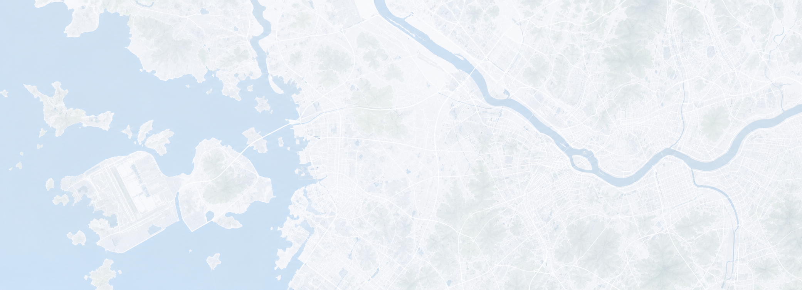

CCTV000
긴급 00
교환기000
긴급 00
SCADA000
긴급 00
행선안내000
긴급 00
전송000
긴급 00
공항철도 노선 · 역사 현황 지도
정상
주의
장애
통신 단절

지도 외 감시 지점 7
시간대별 발생 분포 (전체)
월화수목금
적음많음
장애 유형 분포 (전체)
최근 30일총 16건
- ATS 6건 (37.5%)
- Network 4건 (25.0%)
- 설비 3건 (18.8%)
- 전원 2건 (12.5%)
주요 장애 원인 TOP 3
1. 장비 성능 저하6건
2. 전원 불안정4건
3. 네트워크 지연3건
반복 고장 상위 역사 최근 30일
TOP 1계양5건
TOP 2김포공항3건
TOP 3인천공항1터미널2건